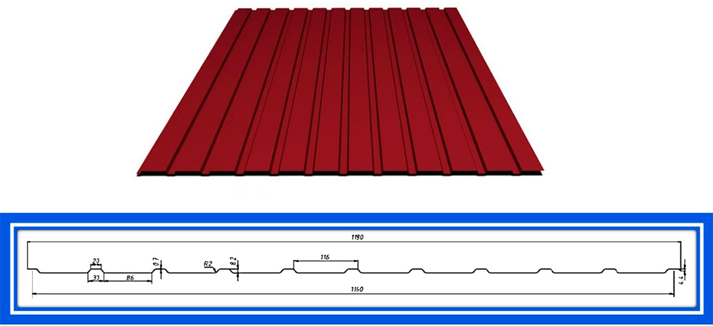

Профнастил С-8
Профнастил С-8 является универсальным строительным материалом. Это легкий, прочный и недорогой материал, который приобрел широкую популярность среди застройщиков. Материал представляет из себя стеновой профилированный лист с трапециевидной волной высотой 8 мм., который изготавливается методом гофрирования оцинкованного стального листа. Его несущая способность из-за малой высоты волны невелика, но популярность из-за этого не снижается.
Материал применяется для:
облицовки фасада с целью декорирования, утепления;
оборудования заграждения, забора (подходит при отсутствии резких порывов ветра);
сооружения небольших или временных построек (душа, туалета, сарая);
создания подвесных потолков;
покрытия кровли (доступно при угле наклона ската от 40 градусов);
Основную антикоррозийную защиту обеспечивает оцинкованное покрытие. Для большей надежности оцинкованный лист покрывают защитным полимерным слоем. Цена за лист с полимерным покрытием дороже, но срок эксплуатации около 20-30 лет в зависимости от покрытия. Благодаря защитно-декоративному покрытию, обеспечивается надежная защита и привлекательный внешний вид материала в течение длительного периода.
Внешний вид и схема профнастила С-8 от компании ООО "Тектум-С"
Основной выбор цветов из палитры RAL, который предлагает компания ООО "Тектум-С"